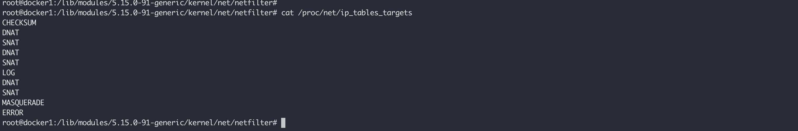
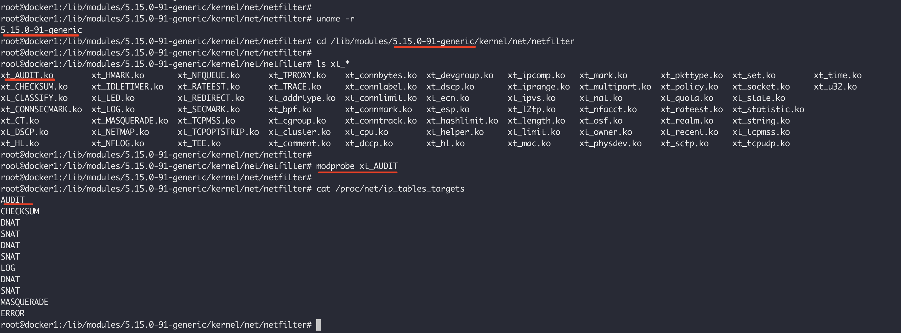
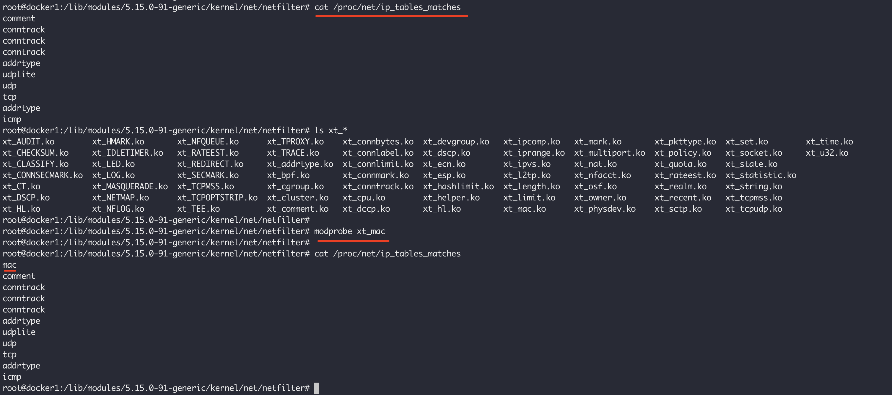

深入理解 iptables
iptables是Linux上重要的防火墙程序，它既是一个用户态的程序，也是一个内核的模块，通过向Linux内核netfilter框架注入钩子函数，以及自定义的规则，实现包过滤，修改，地址转换，日志记录等功能。在k8s生态中，作为kube-proxy的默认后端，实现流量在集群之内的的路由和转发，写这篇文章的最初原有也是想了解k8s是如何将访问到节点上的流量，路由到自定义的Service以及最终的pod内部。
netfilter
在了解iptables之前，先认识下netfilter，它是Linux内核子系统，允许实现各种与网络相关的操作，它是网络相关操作领域的基础设施，基于此可以实现任何大多数网络包的诉求：
- 包过滤，这可能是大多数场景下的诉求，也是
iptables最多的使用场景，可以用来限制某些特征的包进入到本机，例如，指定ip范围，某类协议的； - NAT，负责转换网络数据包的源IP和目的IP；
- 数据包修改，地址转换只是数据包修改的一种，还可以修改数据包的TOS（
Type Of Service，服务类型）、TTL指以及为数据包设置Mark标记等；
Netfilter框架在Linux内核中提供了一堆钩子，当网络数据包通过内核中的协议栈时，它会遍历这些钩子。Netfilter允许使用这些钩子编写模块并注册回调函数，当钩子被触发时，回调函数将被调用。这些钩子被用在包处理的以下5个阶段：

NF_INET_PRE_ROUTING：当数据包从网卡上收到还有路由之前，这类钩子函数就会被触发，然后内核判断这个数据包是否是发往当前主机的，根据条件，将触发以下两个钩子；NF_INET_LOCAL_IN：当数据包决定路由到本机上的时候，就会触发这类钩子；NF_INET_FORWARD：当数据包决定要继续转发的时候，这类钩子会被触发；NF_INET_LOCAL_OUT：这类钩子函数会在本机生成数据包，发出去之前被调用；NF_INET_POST_ROUTING：这类钩子函数主要用于从本机发出去的数据包，但是在发到网卡之前；
为了清楚地了解Netfilter框架在协议栈内部是如何实现的，我们来看看内核源代码中是如何实现的，我们以linux v6.6版本NF_INET_PRE_ROUTING 阶段的钩子函数为例，了解下它的生效机制。当一个ipv4的包到达的时候，它的处理函数ip_rcv的实现逻辑如下：
1 | int ip_rcv(struct sk_buff *skb, struct net_device *dev, struct packet_type *pt, |
从上面的实现代码可以看到，收到包之后，NF_INET_PRE_ROUTING 阶段的钩子函数会被调用，我们继续看下NF_HOOK的实现：
1 | NF_HOOK(uint8_t pf, unsigned int hook, struct net *net, struct sock *sk, struct sk_buff *skb, |
这个函数做两件事，调用 nf_hook 运行注入的钩子函数，如果通过该阶段的钩子函数，包没有被丢掉，那么就调用 okfn，这里 okfn 对应的是 ip_rcv_finish。所有5个阶段的钩子函数调用如下所示：
| 阶段 | 文件 | 函数 |
|---|---|---|
NF_INET_PRE_ROUTING |
ip_input.c | ip_rcv |
NF_INET_LOCAL_IN |
ip_input.c | ip_local_deliver |
NF_INET_FORWARD |
ip_forward.c | ip_forward |
NF_INET_LOCAL_OUT |
ip_output.c | ip_local_out |
NF_INET_POST_ROUTING |
ip_output.c | ip_output |
因此，netfilter 提供了一种可以介入到数据包处理的各种流程中的机制，通过它提供的入口，可以将用户注册的各种用于处理包的流程加入到内核中。那么，我们再来看下注册回调函数的流程，首先是 nf_register_net_hooks 和 nf_unregister_net_hooks 这个注册和去注册的函数：
1 | void nf_unregister_net_hook(struct net *net, const struct nf_hook_ops *ops); |
这里的 net 参数表明命名空间，如果不指定会取默认值。nf_hook_ops 描述一个 hook 操作：
1 | struct nf_hook_ops { |
其中nf_hookfn表示一个钩子函数，hooknum 表示这个钩子函数生效的阶段，它是一个枚举值nf_inet_hooks：
1 | // linux/include/linux/netfilter.h |
iptables
netfilter 提供了其他程序介入到内核数据包处理流程的框架，iptables提供了一种数据包过滤的方案实现，和 iptables 同类的还有 ip6tables 以及 arptables 用于不同的协议。最新的nftables 也是一个基于netfilter开发的包过滤系统，用于替换替换现有的 {ip,ip6,arp,eb}tables 命令，使用用户态的nft 命令作为其配置入口，虽然早在Linux kernel 3.13已经加入内核，但是到目前为止仍然不是很普及。
常听到的防火墙工具还有Deb发行版的UFW，旨在简化iptables防火墙配置，提供了一种用户友好的方式来创建基于IPv4或IPv6主机的防火墙，默认情况下，UFW处于禁用状态。以及Red Hat发行版本默认的firewalld，使用 nftables 作为其后端实现。
不过，到目前位置，最广泛使用的还是 iptables，可以使用 iptables-translate 将iptables 命令转换为 nft 命令：
1 | $ iptables-translate -A INPUT -s 192.168.01/16 -p TCP -j DROP |
iptables 的处理流程图如下所示：

table
iptables定义了 filter、nat、raw、mangle以及security5张表，每张表生效的 netfilter 阶段不同，iptables 将对应于 netfilter 不同阶段的规则保存在不同的链中。这5张表生效的阶段如下表所示：
| 表生效阶段以及对应的链 | filter | nat | mangle | raw | security |
|---|---|---|---|---|---|
NF_INET_PRE_ROUTING <-> PREROUTING |
-100 |
-150 |
-300 |
||
NF_INET_LOCAL_IN <-> INPUT |
0 |
100 |
-150 |
50 |
|
NF_INET_FORWARD <-> FORWARD |
0 |
-150 |
50 |
||
NF_INET_LOCAL_OUT <-> OUTPUT |
0 |
-100 |
-150 |
-300 |
50 |
NF_INET_POST_ROUTING <-> POSTROUTING |
100 |
-150 |
上面横向看表示表示在netfilter对应的阶段，有哪些表里面的规则会生效，表里面的数字表示优先级，优先级较低的最先执行，纵向看表示表在哪些阶段生效，空值表示该表在当前阶段不生效。注册的表会写入内核文件 /proc/net/ip_tables_names：
1 | $ cat /proc/net/ip_tables_names |
它们的作用分别是：
filter：该表包含提供实际防火墙功能的规则，它允许用户决定是否允许数据包到达其目的地；nat：此表包含允许用户通过更改数据包的源地址和目标地址将数据包路由到NAT网络上的不同主机的规则，它通常用于允许访问无法直接访问的服务；mangle：该表包含允许用户更改数据包标头和其他形式数据包更改的规则；raw：该允许用户在内核开始跟踪其状态之前处理数据包，因此它一般最先被执行；security：在filter表之后访问该表以实施强制访问控制网络规则，SELinux使用它在数据包上设置SELinux上下文标记；
可以继续从内核代码中寻找这些表创建的逻辑，关于内核代码可以不用继续追究，我们只需要知道内核会在启动过程中把这些表创建好，如果感兴趣的可以继续阅读相关代码，security，filter，mangle，nat 以及 raw。
chains
链是规则的集合，当一个数据到达的时候，就会触发注册对应netfilter阶段中不同表的钩子，然后遍历对应的链中的规则执行。规则是告诉系统如何处理数据包的语句，可以用规则阻止一种类型的数据包，或转发另一种类型的数据包，规则对应的处理动作称为Target。例如，对于下面这条规则：
iptables -A INPUT -s 192.168.01 -p TCP -j DROP
没有指定表的时候，默认是 filter。这条规则的意思就是匹配源IP为192.168.01包然后丢掉，INPUT指的是链，DROP 就是所谓的 Target。
iptables 中默认的链如下所示：
PREROUTING：该链中的规则适用于刚到达网络接口的数据包；INPUT：该链中的规则在数据包被传递给本地进程之前使用；OUTPUT：这里的规则适用于刚刚由某个本地进程生成的数据包；FORWARD：此处的规则适用于通过当前主机路由的任何数据包；POSTROUTING：该链中的规则适用于即将通过网络接口发出去的数据包；
用户可以基于自己的需要新创建链，使用 iptables -N 链名称。
targets
target指定数据包应该被如何处理，常用的有ACCEPT、DROP或RETURN，以及来自它的扩展包中定义的DNAT、LOG、MASQUERADE、REJECT、SNAT、TRACE和TTL等等。
ACCEPT：这意味着iptables接受该数据包；DROP：iptables会丢弃这个数据包，对于任何尝试连接到系统的人来说，看起来就好像这个系统根本不存在一样；REJECT：iptables拒绝该数据包。对于TCP，它发送一个connection reset数据包，对于UDP或ICMP，它发送一个destination host unreachable数据包，对于发送者来说目的地存在但是出错了；
每条连应该有默认的Target，可以使用如下的方式查看或者更新链的默认 Target：
1 | # 查看默认策略 |
Target 还分为终止型和非终止型，ACCEPT, REJECT, DROP 都是终止类型的，意味着在处理完匹配的包之后，后面的规则将不会被执行。而像 LOG、Mark 它们是非终止的，它们对匹配的包做一些体日志记录或者添加标记之后，继续执行下一条规则。
iptables可以用扩展的target模块，它们已经被包含在标准的发布包中。如果要看当前系统已经加载了哪些 target，可以查看内核文件 /proc/net/ip_tables_targets，例如：

我们还可以手动加载内核模块，例如，这里加载 xt_AUDIT 扩展：

iptables 的扩展信息可以通过 man iptables-extensions 查看，也可以通过查看在线文档。
module
iptables可以使用扩展的数据包匹配模块，使用-m或--match选项，然后跟上匹配模块的名称，在这之后，根据具体模块的不同，会有各种额外的命令行选项可用。可以在一行中指定多个扩展匹配模块，并且在指定了模块后，可以使用-h或--help选项来获得该模块的特定帮助信息，扩展匹配模块按照规则中指定的顺序运行。
如果指定了-p或--protocol，当遇到未知选项时，iptables 将尝试加载与协议同名的模块，例如，如果指定了 --protocol icmp，当遇到选项 --icmp-type，就会自动加载 icmp 模块，相当于使用了 -p icmp -m icmp。
同样，扩展文档可以使用 man iptables-extensions 来查看，或者查看在线文档。
查看具体模块的帮助文档，可以在指定模块名称的情况下，使用 -h 查看，例如：iptables -m icmp --help。
内核已经加载的匹配模块我们可以查看 /proc/net/ip_tables_matches 文件，如果发现哪些没有加载，可以手动加载，也可以在使用时自动加载。和target不同的是，匹配模块的名称是小写，而target是大写。

rules
一条规则表达了匹配具有什么特征的包做什么动作，使用 iptables 命令创建规则的格式如下所示：
sudo iptables [option] CHAIN_rule [-j target]
下面是一个示例，表示接受来自192.168.0.27包：
sudo iptables –A INPUT –s 192.168.0.27 –j ACCEPT
sudo iptables --append INPUT –-source 192.168.0.27 –-jump DROP
根据日常的使用场景，举一些比较常用的例子。
禁止来自某个IP的报文
REJECT 来自某个IP地址的报文：
1 | iptables \ |
精确删除这条规则：
1 | iptables \ |
可以更新这条规则，更换里面的 IP：
1 | iptables \ |
-t filter 可以不用声明，默认就是这张表。
添加规则到具体位置
首先需要需要打印出当前表中的规则序号，然后才能精准插入到某个位置：
iptables --list --line-numbers
这个命令会把规则的顺序打印出来：
1 | Chain INPUT (policy ACCEPT) |
假设要阻止除了其中一个地址59.45.175.10之外的整个IP块59.45.175.0/24，由于iptables按序遍历规则并且处理，所以在最开始的位置将59.45.175.10加入白名单即可：
1 | iptables --table filter --insert INPUT 1 --source 59.45.175.10 --jump ACCEPT |
现在 INPUT 链中的规则应该如下所示：
1 | Chain INPUT (policy ACCEPT) |
修改链的默认策略
如果链中没有任何规则匹配时对数据包执行的操作，默认链默认有一个接受策略，可以使用下面的方式更改默认策略：
iptables --policy INPUT DROP
禁止访问某个端口
例如，可以禁止某个访问的IP登录我们的主机：
1 | iptables \ |
可以使用multiport模块提供的匹配功能，禁止访问多个端口：
1 | iptables \ |
可以使用如下的语法提供反向匹配，!表示除什么之外，这里表示除了22,80,443这几个端口，都禁止访问：
1 | iptables --append INPUT --protocol tcp --match multiport ! --dports 22,80,443 --jump DROP |
禁止icmp请求：
1 | iptables --append INPUT --jump REJECT --protocol icmp --icmp-type echo-request |
REJECT表现出来的就像这个主机存在但是回复了错误，但DROP表现的就像这个目的主机不存在一样，没有任何错误信息：
1 | iptables --append INPUT --protocol icmp --jump DROP --icmp-type echo-request |
TCP连接状态跟踪
如果通过INPUT链禁止了某个IP访问本机，那我们同样也访问了这个IP，因为即使我们的请求到达了对端，但是对端的响应在到达本机的途中，经过iptables时被丢掉了。但是可以通过conntrack模块解决这个问题，因为iptables是一个有状态的防火墙，可以使用这个模块跟踪一下任意状态：
NEW：该状态表示连接的第一个数据包；ESTABLISHED：此状态表示属于现有连接一部分的数据包，对于处于这种状态的连接，它应该已经收到来自其他主机的答复；RELATED：此状态表示与另一个ESTABLISHED连接相关的连接。FTP数据连接就是一个例子——它们与已经建立的控制连接相关；INVALID：这表示数据包没有正确的状态。这可能是由于多种原因造成的，例如系统内存不足或由于某些类型的ICMP流量所致；UNTRACKED：raw表中具有NOTRACK目标的任何免于连接跟踪的数据包最终都会处于此状态；DNAT：这是一个虚拟状态，表示包的目的地址已经被nat表中的规则更改；SNAT：和DNAT一样，表示包的源地址已经被更改；
因为，为了达到本节开始的目的，允许RELATED和ESTABLISHED状态的包到达本机：
1 | iptables \ |
常用防安全攻击规则
如果要阻止圣诞树攻击（TCP所有标志位被设置为1的数据包被称为圣诞树数据包（XMas Tree packet），之所以叫这个名是因为这些标志位就像圣诞树上灯一样全部被点亮），可以用下面这样的命令：
1 | iptables --append INPUT --protocol tcp --match tcp --tcp-flags ALL FIN,PSH,URG --jump DROP |
为了阻止常见的无效数据包，例如同时设置了SYN和FIN的数据包，我们可以简单地查找同时设置了这两个数据包的数据包。执行此操作：
1 | iptables --append INPUT --protocol tcp --match tcp --tcp-flags SYN,FIN SYN,FIN --jump DROP |
还有阻止不以 SYN开头的新连接数据包：
1 | iptables --append INPUT --protocol tcp --match conntrack --ctstate NEW --match tcp ! --tcp-flags FIN,SYN,RST,ACK SYN --jump DROP |
速率限制
limit 通过令牌桶实现速率限制，它有两个主要参数，--limit-burst 充当缓冲区，是缓冲区大小，如果超过此缓冲区大小，则所有数据包都会被丢弃，但可以以--limit往这个桶里面放入令牌：
1 | --limit rate[/second|/minute|/hour|/day] |
例如限制每秒只能处理一个ICMP请求：
iptables --append INPUT --protocol icmp --match limit --limit 1/sec --limit-burst 1 --jump ACCEPT
可以使用recent模块实现一个动态限制，例如，我们可以限制某个IP在过去的180s内最多5次连接到本机，不过这通常需要两个命令配合完成：
1 | # 将访问22端口的IP都放在一个名为SSHLIMIT的列表中 |
本地端口重定向
例如，可以将访问本地80端口的包转发到8080端口：
1 | iptables -t nat -A PREROUTING -p tcp --dport 12000 --jump REDIRECT --to-ports 12000 |
DNAT转换
例如，对于只监听了本地地址的服务，想通过本机公网地址访问，可以使用DNAT进行转换：
1 | iptables -t nat -I PREROUTING 1 -p tcp --dport 12000 --jump DNAT --to-destination 127.0.0.1:12000 |
规则持久化
通过用户空间的 iptables 命令创建的规则或者链默认只存在于内存中，当系统重新启动就会丢失，如果要对已经创建的规则进行保存，首先可以手动调用 iptables-save 命令：
sudo iptables-save > /etc/iptables/rules.v4
sudo ip6tables-save > /etc/iptables/rules.v6
在想要恢复的时候，调用 iptables-restore 命令进行恢复：
sudo iptables-restore < /etc/iptables/rules.v4
sudo ip6tables-restore < /etc/iptables/rules.v6
如果想要自动进行 iptables 规则保存，需要安装 iptables-persistent 服务：
sudo apt-get install iptables-persistent
1 | $> apt-get install iptables-persistent |
这将安装 netfilter-persistent.service 和 iptables.service 两个系统服务，他们之间是冲突的，只能启动一个：
1 | $> systemctl start netfilter-persistent.service |
netfilter-persistent.service 会自动将最新的规则刷新到 /etc/iptables/rules.v4 文件，并且在系统启动时自动恢复。
日志记录
如果希望将某些匹配的包记录到日志文件中，可以使用LOG这个Target，正好使用LOG验证下之前说明的iptables在不同阶段不同表的顺序。在使用之前，我们先需要开启rsyslog服务，并且将iptables的日志单独输出到一个文件中：
1 | # 编辑文件，/etc/rsyslog.conf，增加下面一行 |
然后重启rsyslog服务：
systemctl restart rsyslog
然后写入下面的规则，下面这些规则正好是本机产生的数据包发送出去的流程，其中的172.23.32.1是本次测试的目的地：
1 | OUTPUT |
然后发送一个icmp报文到达目的地：
ping -c 1 172.23.32.1
此时可以从日志文件/var/log/iptables.lo中获取到如下的信息，正好是iptables处理发包经过的表和链：
1 | $> grep 172.23.32.1 /var/log/iptables.log |grep 64425 |
同理，我们也可以使用如下的规则验证收报的的流程：
1 | PREROUTING |
ping之后会得到如下的日志信息，和我们的收报流程正好相符：
1 | $> grep 172.23.32.1 /var/log/iptables.log |grep 21931 |
参考链接
- Illustrated introduction to Linux iptables
- Iptables Tutorial: Securing VPS with Linux Firewall
- A Deep Dive into Iptables and Netfilter Architecture
- iptables — a comprehensive guide
- What Is iptables and How to Use It?
- Nftables - Packet flow and Netfilter hooks in detail
- Write a Linux firewall from scratch based on Netfilter
- 3 ways to make iptables persistent
- nftables 中文教程
- Redhat - nftables 入门